Middle two weeks - June 23 to July 7, 2015
Day 15 - Wide open spaces
Leaving Montana (finally)
7:23am, 14h 15mm, 89 miles, 2,566 ft of climbing


Day 16 - Scenic Byway and some assistance
Past Mesa Falls towards the Tetons
8:14 AM 81.1mi 3,374ft
Day 17 - Grand Teton NP in AM, Togwotee in PM
Lost tourists and finding hidden lakes
08:14 AM, 61.8mi, 4,042ft of climbing
Day 18 - Union Pass only better
The Devil's Hole Trail and riding the divide
6:24 AM 82.6mi 4,157ft of climbing
Heading to Union Pass

Starting the day the same way I started most days - me and my shadow.
Some nice 8-10% grades along the way

Between the two climbs in the reroute. Climbing to
here was one of the toughest (most fun) I had.
The views opened up all the back to the Tetons

View west
At the top of Devils Hole Trail

View east
After the two climbs I rode along the divide for miles

Union Pass area - view west
near Union Pass

Union Pass area - view north
... for miles and miles

I was amazed again and again during the five plus hours it took me to go
through this section.
Rolling toward Pinedale - back in the desert

The last 40 miles was rolling downhill and south through wide open spaces.
The Wind River Range was to the east
Day 19 - Wyoming - after the mountains
A long, hot day in the desert
07:52 AM, 87.7mi, 3,560ft of climbing
Day 20 - Another long day in Wyoming's Great Basin
Water supply and disappearing jeep trails
07:15 AM, 97.9mi, 2,712ft of climbing
100 miles thru the desert
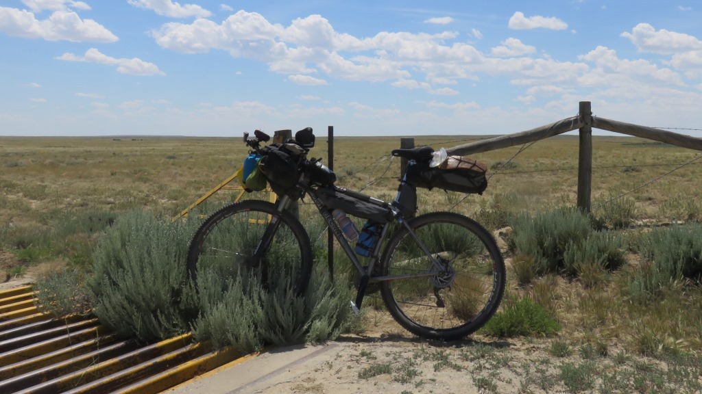

By 9:30 I was alone for the day

Flat - but the roads not

The double track was rutted and difficult to get a good line through.
There were no cattle guards, fences or signs.

Wild horses along the way

He really looked angry.
about 10 miles that felt more remote than almost any other spot on the ride.

Picture from Jill Horner's story also gives a sense of what I was riding
through.
Wamsutter, WY

Back to civilization or at least a Truck stop along Interstate 80
Day 21 - Brush Mountain Lodge
My birthday in a slice of heaven
7:06 AM 81.9mi 3,928ft of climbing
More desert south of Wamsutter, WY
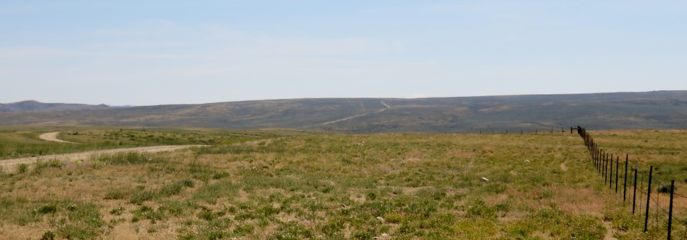
Going south there were many trucks building, widening or maintaining the
gravel road.
Afternoon in the desert
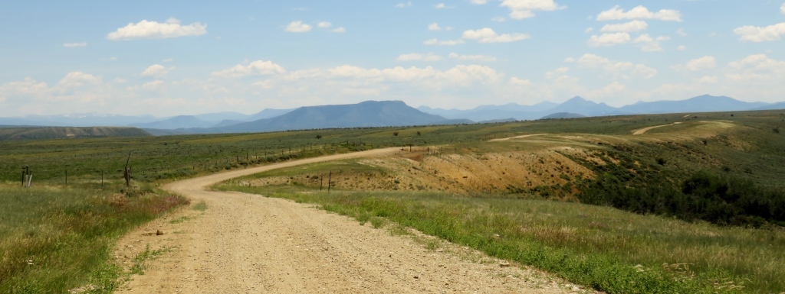
Heading toward these mountains in Colorado
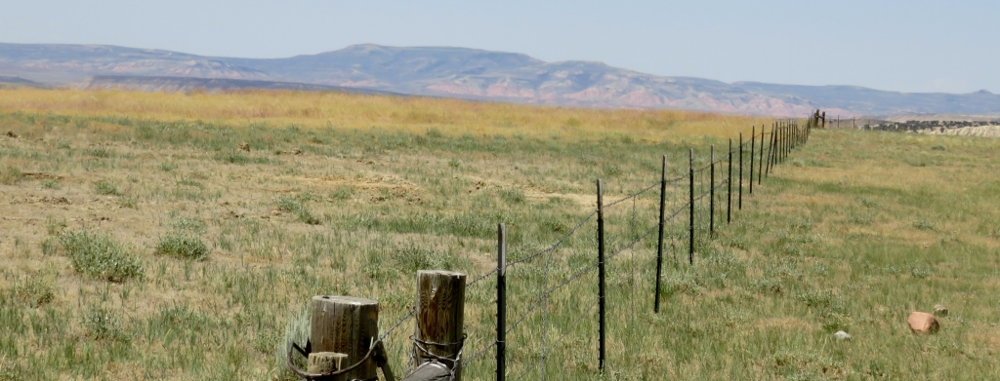
another fence
Savery, WY - 5 miles to the Colorado border
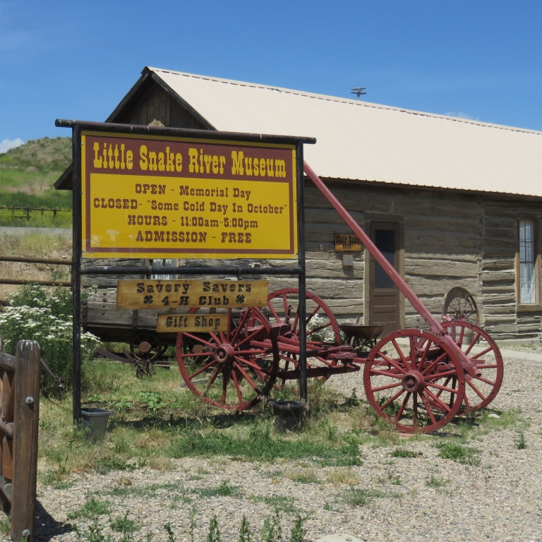
The museum basement had various items in the fridge. I had a couple
yogurts and at least 4 cheese sticks to go with 2 cans of Coke.Their break room was air conditioned so
I stayed for a while.
Lots of ups and down on the way to Brush Mountain Lodge.
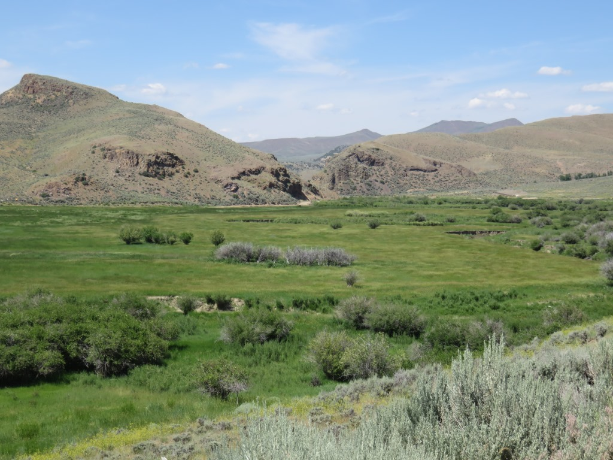
Entering Colorado - destination is 12 miles up Slater Creek
Along Slater Creek
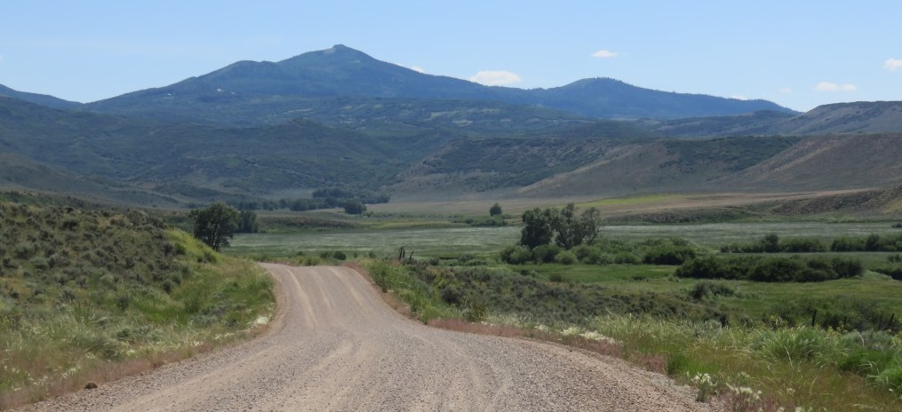
It was hard to get a sense of how bad this was going to be.
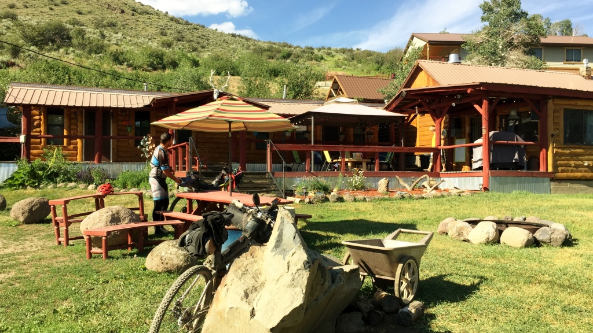
The ride up to Brush Mountain Lodge was slow and painful but it was a ride
and not a walk
Brush Mountain Lodge
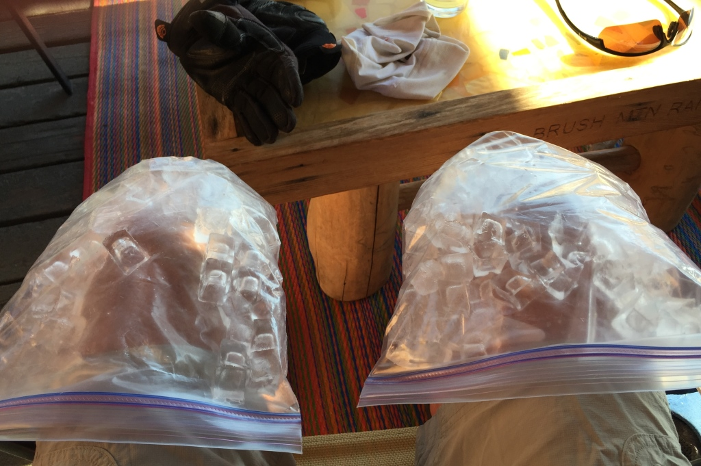
Before I could sit down I had been offered Lemonade and Cheeseburgers for
my belly and ice for my knees.
Happy Birthday Jim

Day 22 - Colorado Mountains
Long steady climbs and descents
07:55 AM, 50.5mi, 3,220ft of climbing


Day 23 - A long day out on the road
A giant coast into Kremmling and mind games
06:55 AM, 108.7mi, 6,441ft of climbing

The first 20 miles out of Steamboat was developed with homes and ranches
all around.

Road leading to Yampo River Dam. I was supposed to ride across the top of
it.
toward Lynx Pass

This was a long climb which put my goal of reaching Dillon in doubt
Finally on top of Lynx Pass

Top surprised me - I thought I had a few more miles to go
Gore Pass

After struggling on Lynx I chose Gore Pass instead of through Radium, an
old uranium mine.
After Gore Pass the 14,000 ft mountains came into view

It was about three miles to the pass and then a wonderful 16 mile coast
down to US Hwy 40.
36 miles to Silverthorn - starting at 3pm

This was torture - gradually up along the Green Mountain Reservoir
End of a 100 mile day
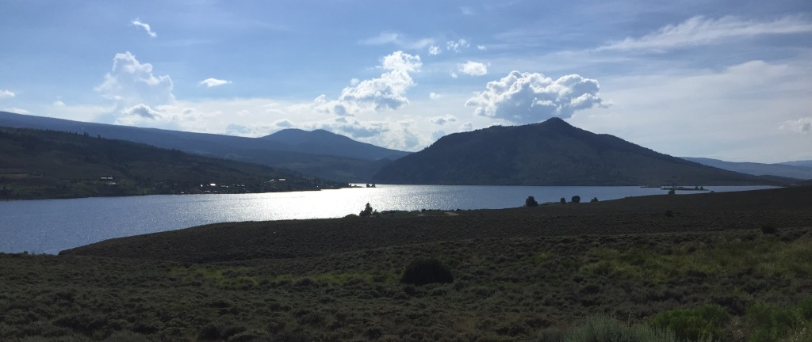
With less than 15 miles to go I was able to convince myself I could
probably walk the last few miles.
Day 24 - Dillon Reservoir, Breckenridge and Boreas Pass
Highest pass on my tour
7:00 AM 68.0mi 3,507ft of climbing
Lake Dillon

Starting the day at the Dillon Lake by my hotel
Looking down on Breckenridge

The lakes were full
Boreas Pass Road

9 mile climb. Looking like rain.
Boreas Pass - 11,482ft

Highest pass I traveled through
Boreas Pass - 11,482ft

Railroad car to show that there used to be a railroad thru here.
The south side of Boreas Pass
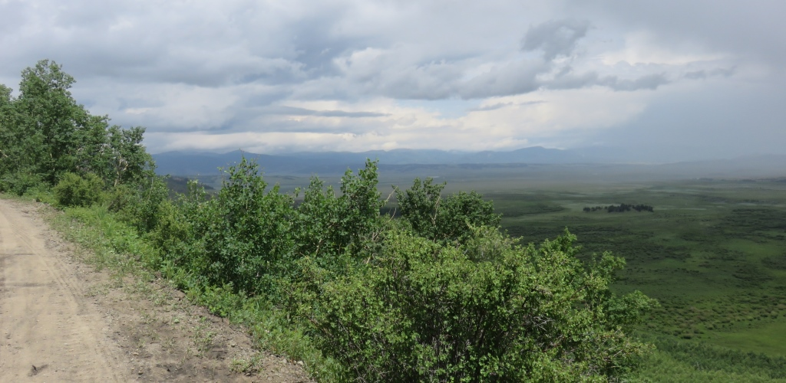
From here on it would rain almost every afternoon
from Como to Hartsel a 10 mile stretch of washboard

There were rain clouds all around but the rain held off until I reach the
Highline Cafe & Saloon in Hartsel.

Rainbow over bustling downtown of Hartsel, CO.
Day 25 - July weather
More afternoon rains and washboard roads
7:51 AM 48.4mi 2,300ft of climbing
Sunset on my home for the previous night

The town gazebo - safe and sound
Sunrise in Hartsel

Just about a traffic jam of bikes

People coming and going all different ways from Florida to Alaska

I think I've been down this road before.
Trucks where they shouldn't be - Boots, jacket but no driver

Somehow this truck was gone a few hours later. The mud was not
From outside Salina

Dropping almost 3,000 ft over 12 miles.
Day 26 - Marshall Pass and the Colorado Trail
Tepees, Rain and the 4th of July
07:30 AM, 46.4mi, 4,382ft of climbing
Repairs were needed before our big climb

Poncha Springs Post Office was our repair stop

Stopping for repairs after just getting started
Once off the main road it looked like it would be a beautiful day

27 miles - 4,000 ft

We got this
On top of Marshall Pass

On top of Marshall Pass - Rob, Andrew and Jim

Home for an afternoon nap

Colorado Trail - Is this a shortcut?
Home for the night - A leaky tepee

Room for three people and bikes.
Day 27 - Lighting and Thunder in the afternoon
Two passes and outrunning the rain
07:49 AM, 101.0mi, 5,182ft of climbing
Day 28 - Getting some rest and plotting my course
The Library, Amish Cinnamon Rolls and Wild Boar
Sleeping in at the Windsor Hotel - zero ft of climbing
Woke up to rain
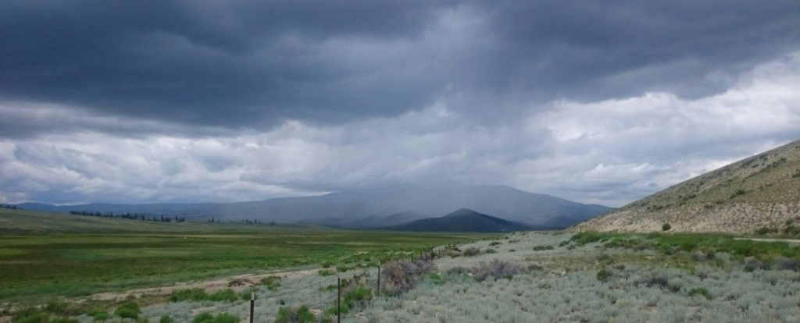
I went to the Amish bakery and bought a cinnamon bun and headed out to do
my laundry.
Two nights at the Windsor Hotel
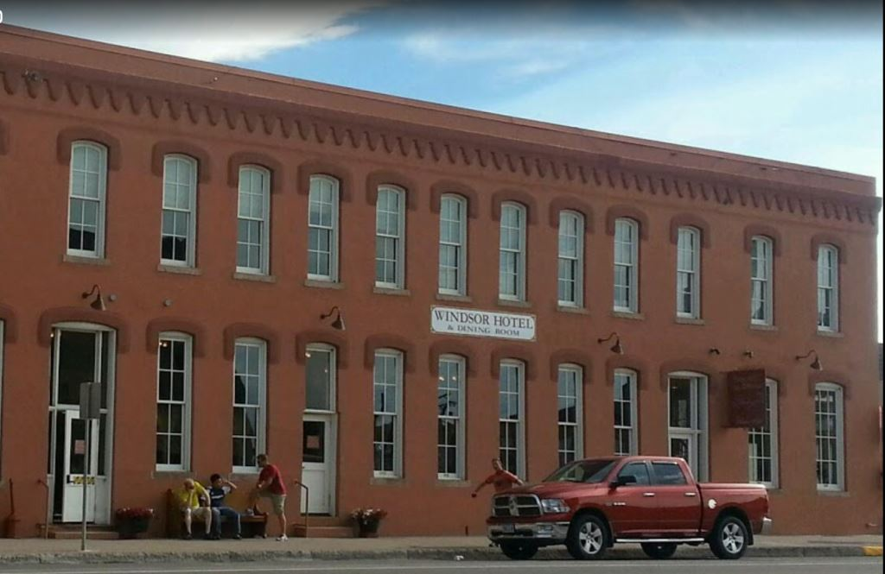
I had a delicious meal (Wild Boar) and fantastic desert to celebrate my
day off.

I spent the afternoon plotting my course in and around the remainder of
the tour divide. I was trying to avoid the afternoon rain and wind.

An afternoon snack of Strawberry Rubarb pie from The Columbine.